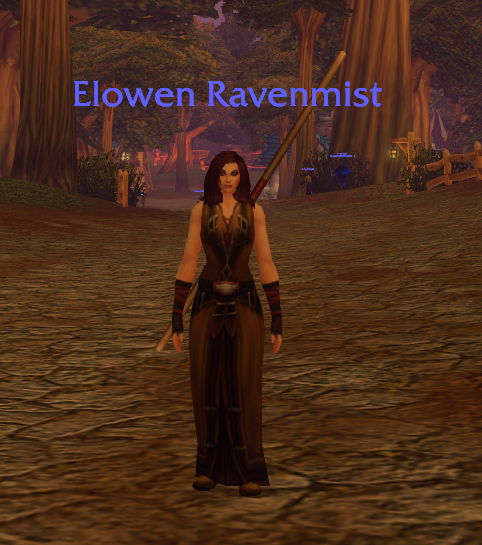

Elowen Ravenmist
Spill: World of Warcraft Forever
Rase: Human
Klasse: Mage
Elowen Ravenmist er en menneskelig magiker som har begynt sitt eventyr i Azeroth. Her vil jeg dele opplevelser og utviklingen hennes etter hvert som hun utforsker verden.
